Respect
Honorer les ancêtres, les maîtres, les kami et les responsabilités attachées à chaque rang.

Dynastie Shintai · Shintanien(ne)
Présentation et organisation
Shintai incarnait l’harmonie entre discipline, tradition et spiritualité. Le code du guerrier enseignait loyauté, maîtrise de soi et respect des anciennes voies, tandis que temples, jardins et armures finement ouvragées rendaient visible cette quête d’équilibre.
Le Tenno, descendant sacré des kami, portait la continuité symbolique du royaume. Le Shogun exerçait le pouvoir militaire et administratif, tandis que les Daimyos gouvernaient les provinces sous le regard de l’Aube de Jade.
Cette paix ordonnée ne supprimait ni les inégalités ni les rivalités. Elle les contenait dans une structure où chacun connaissait sa place, son devoir et le prix du déshonneur.
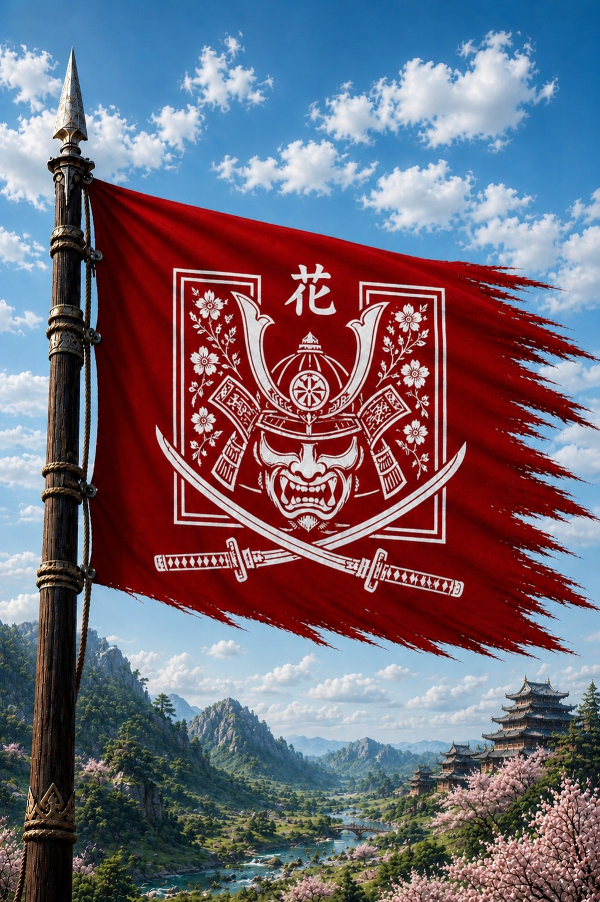
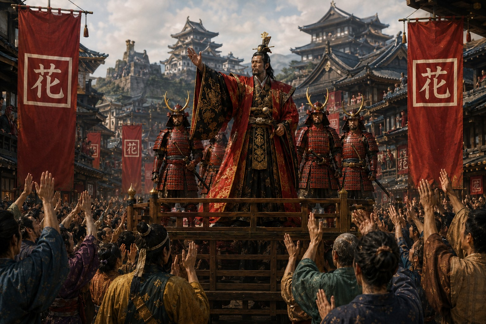
Un empire florissant
L’archipel réunissait montagnes brumeuses, forêts anciennes, rizières fertiles et côtes actives. Chaque province possédait ses coutumes, mais toutes partageaient le respect de la nature et des esprits.
Le riz, l’artisanat et le commerce maritime nourrissaient une économie prospère. Yamashiro rassemblait nobles, guerriers, artisans et érudits dans une capitale pensée comme le reflet de l’harmonie impériale.
Honorer les ancêtres, les maîtres, les kami et les responsabilités attachées à chaque rang.
Chercher l’équilibre entre l’individu, la communauté, la nature et l’autorité impériale.
Agir avec maîtrise face à la peur et préférer le devoir à la préservation de soi.
Le pouvoir dans le cercle de Jade
Le Tenno incarne la dynastie, le Shogun gouverne en son nom et les Daimyos administrent les provinces. Autour d’eux, magistrats, scribes et grandes lignées préservent la continuité du royaume.
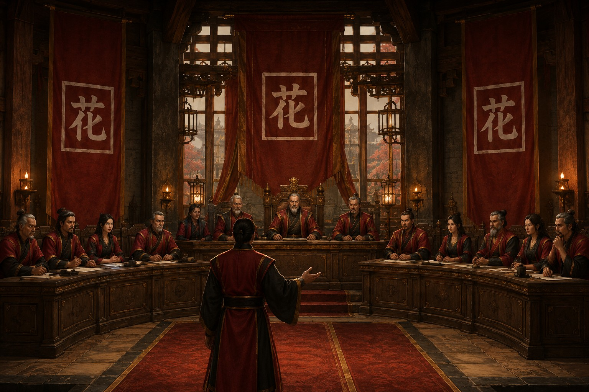
Descendant des kami et autorité suprême, il incarne l’unité spirituelle et dynastique du royaume.
Il exerce le pouvoir militaire et administratif, maintient l’ordre et conduit l’État au nom du Tenno.
Famille régnante et grandes lignées y confrontent leurs avis afin de conseiller le souverain et préserver la continuité.
Ils gouvernent les provinces, entretiennent leurs forces et conservent leur autonomie tant que leur loyauté demeure intacte.
Conseillers, scribes et Bugyo assurent la gestion quotidienne, l’impôt, la justice et les archives.
Hiérarchie sociale
Souverain sacré et garant de la continuité dynastique.
Chef des armées et administrateur exécutif gouvernant au nom du Tenno.
Seigneur territorial disposant d’une large autonomie sous serment de loyauté.
Magistrat et juge chargé de l’administration et de la justice.
Artisan ou marchand indispensable au rayonnement économique et culturel.
Paysans et habitants formant le socle productif du royaume.
Exclus, mendiants ou criminels placés au bas de l’ordre social.
Rangs militaires
Officier et maître de guerre responsable de la stratégie et de la conduite.
Garde d’élite directement attaché au souverain ou à un grand seigneur.
Agent discret chargé du renseignement, de l’infiltration et du sabotage.
Soldat formant les troupes de masse levées en temps de guerre.
Guerrier sans maître pouvant servir comme mercenaire.
HonneurLes guerriers répondent au code ; une faute extrême peut conduire au seppuku.
RangLa sanction dépend du statut social, les classes inférieures subissant une justice plus directe.
MagistratsLes Bugyo interprètent les lois et cherchent à éviter les abus capables de provoquer des révoltes.
FinalitéLa justice protège moins l’individu que l’harmonie et la continuité de l’ordre moral.
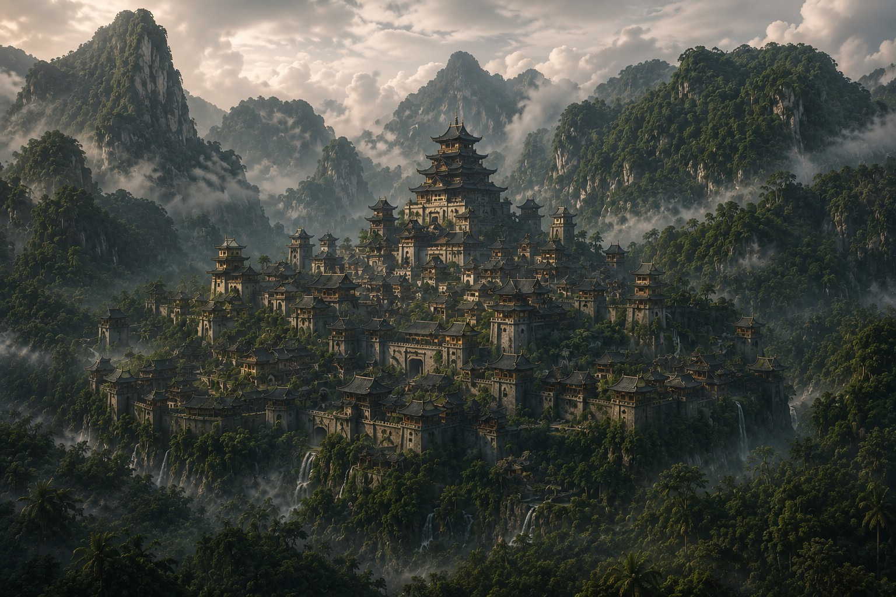
L’âge d’or avant la chute
Les guerres internes cessèrent, les arts atteignirent leur apogée et le peuple connut une prospérité relative. Mais la paix affaiblit l’esprit martial et la cour se divisa dans l’ombre : l’harmonie la plus parfaite se révéla aussi la plus fragile.
Histoire et fondation
Quatre livres retracent l’unification d’Akashima, son rayonnement, ses crises politiques et les dernières heures de Yamashiro.
Surakatsu unit les clans, Yamashiro s’élève et la Dynastie apprend à transformer la guerre en ordre durable.
Dans un Akashima divisé entre clans, Surakatsu du clan Kurogane gagna la confiance des provinces par ses victoires et ses alliances. Après la Guerre des Quatre Bannières, les grands chefs reconnurent son autorité : il devint le premier Tenno et fonda un État centralisé.
« La lame unit ce que l’ambition avait séparé. »
Harukage redessina les provinces, renforça l’Aube de Jade et remplaça les anciennes armées claniques par des unités impériales. Les Routes du Dragon, le recensement et la codification de la Voie du Guerrier Sacré donnèrent au royaume une identité commune.
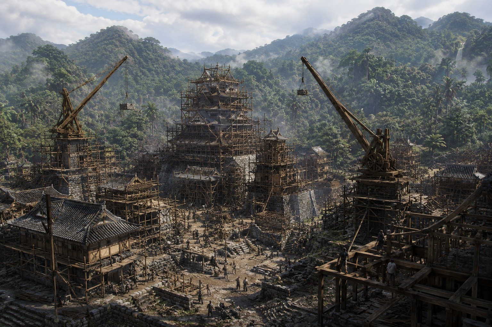
Au pied du mont Takamori, Arukatsu fit édifier murailles, marchés, écoles militaires et le Palais du Soleil Levant. Yamashiro devint le centre politique, culturel et stratégique d’Akashima.
Trois clans profitèrent des troubles du Nord pour marcher sur le cœur du royaume. Le Tenno Harumasa les encercla dans la vallée de Kurohana et renforça durablement l’autorité dynastique.
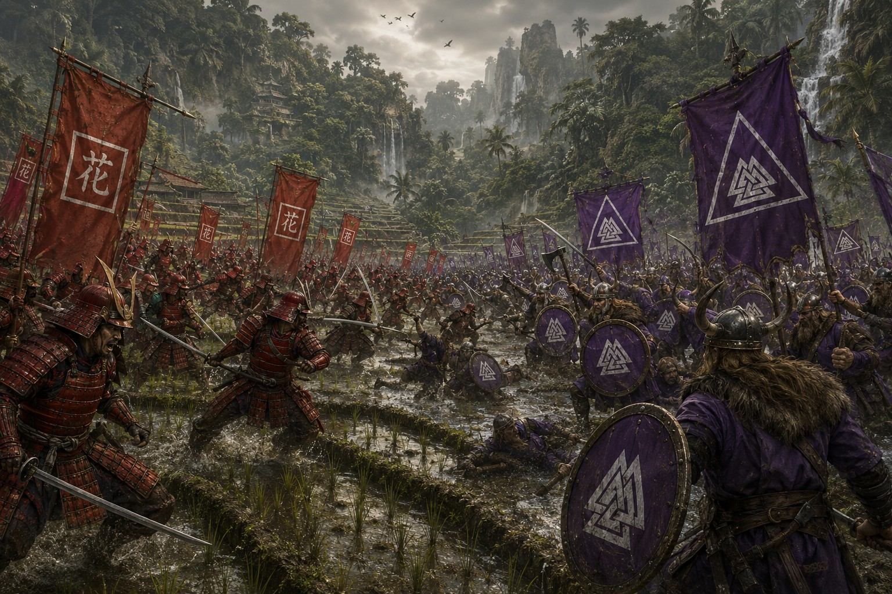
L’apparition de navires falkhemiens près d’une route commerciale essentielle provoqua des semaines de mobilisation. Un accord temporaire évita la guerre, sans dissiper la méfiance.
Le pont de Seigan facilita les convois, les déplacements militaires et les échanges culturels. Il devint un symbole de l’unité et du génie architectural shintanien.
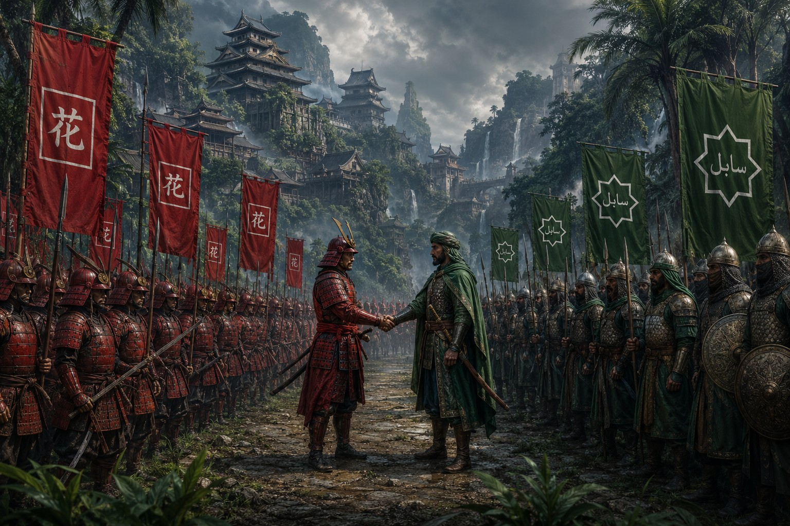
Harunobu et Malik Al-Rashid ouvrirent les frontières aux caravanes et aux navires. Épices, astronomie et mathématiques du désert rencontrèrent armes, céramiques et stratégie shintaniennes, donnant naissance au Mouvement des Deux Voies.
Des créatures de roche animées par une magie ancienne ravagèrent les vallées du Nord. Les troupes les repoussèrent dans les ruines et scellèrent leurs passages.
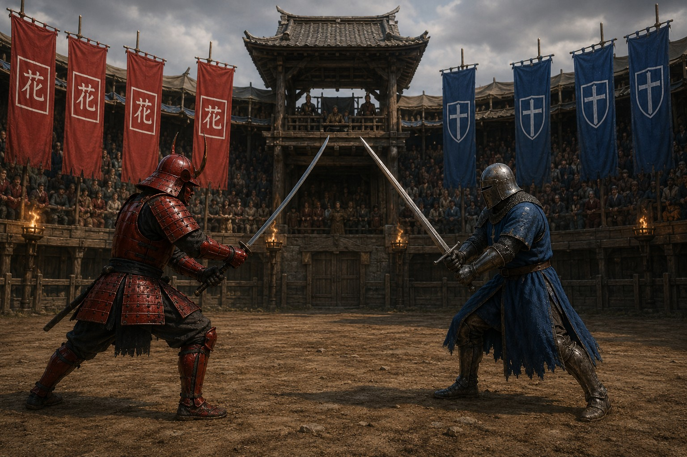
Cols riches en minerais et routes commerciales opposèrent guerriers shintaniens et chevaliers vanloriens. Un traité fixa finalement une frontière reconnue par les deux puissances.
Temples, savoirs, alliances et désastres façonnent une civilisation dont l’équilibre est sans cesse reconstruit.
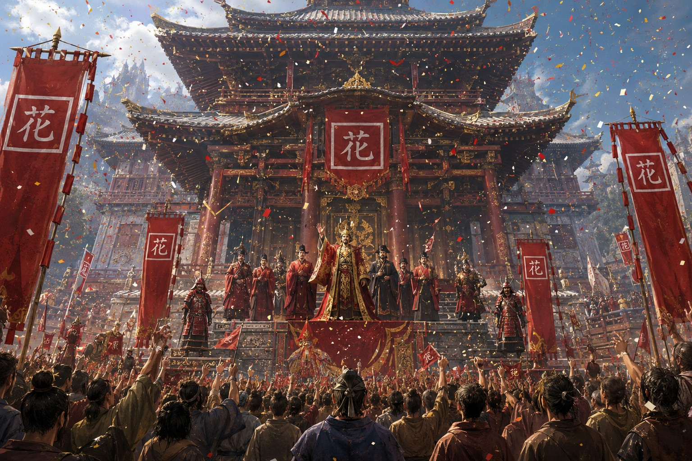
Kazunori fit bâtir sur une colline sacrée un ensemble de sanctuaires, jardins et cours cérémonielles. Son inauguration réunit toutes les provinces et consacra le temple comme lieu des fêtes, couronnements et grands rites.
Pluies torrentielles et vents détruisirent villages, routes et terres agricoles. Troupes et autorités organisèrent ravitaillement, secours et reconstruction.
La perte des rizières vida les réserves de plusieurs provinces. Le Tenno fit distribuer les stocks dynastiques jusqu’au retour d’une récolte favorable.
Céréales, dattes, eau et denrées traversèrent les routes du Sud jusqu’à Yamashiro. Cette aide sauva des milliers de familles et renforça l’alliance orientale.
Lirotaku ouvrit l’enseignement de la stratégie, de la diplomatie, des sciences et de l’histoire aux meilleurs talents de toutes les provinces. L’académie modernisa durablement l’administration.
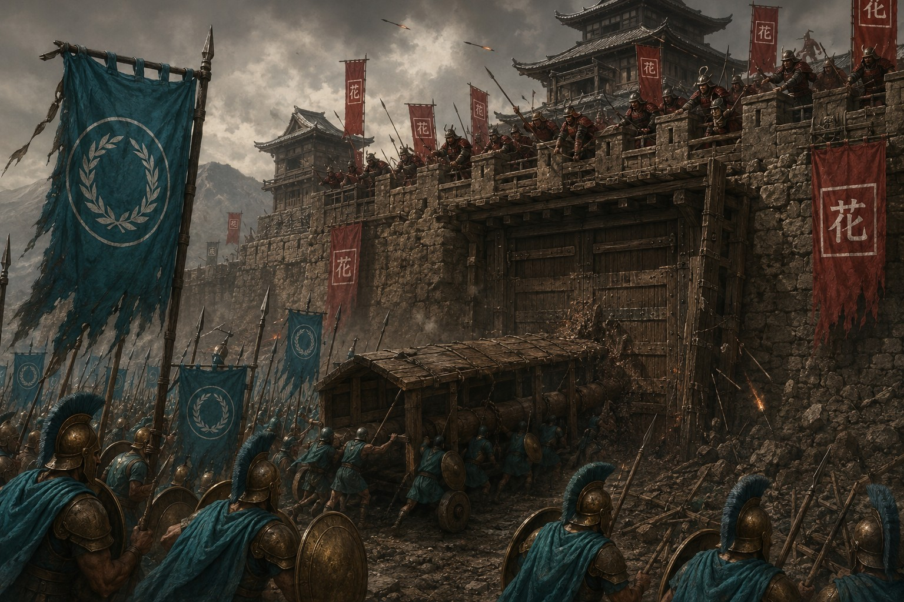
Erythros rompit les accords et prit Yamashiro après une offensive surprise. Les dernières provinces libres transformèrent une année de recul en vaste résistance.
Au printemps, armées et populations occupées se soulevèrent ensemble. Les bannières shintaniennes revinrent sur la capitale, mais villages, récoltes et familles portèrent longtemps les cicatrices de la guerre.
Vainqueur mais ruiné, le royaume mobilisa les fortunes de la cour, aida les agriculteurs et répara routes et villes. La reprise fut lente, mais préserva l’unité.
Des nobles et officiers tentèrent de saisir les bâtiments administratifs et de contraindre le Tenno. Les services de renseignement découvrirent le complot et les gardes loyaux l’écrasèrent en quelques jours.
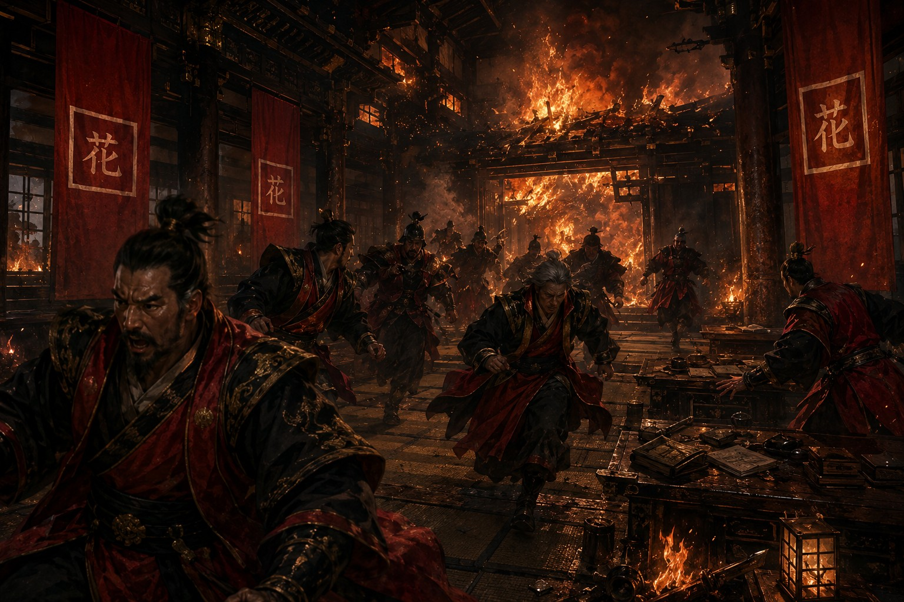
Lors d’une réunion du Tenno et des gouverneurs, le pavillon s’embrasa avec une rapidité inexplicable. Le souverain fut sauvé, mais plusieurs serviteurs et fonctionnaires périrent ; aucune enquête n’établit si le feu fut accidentel, criminel ou surnaturel.
Rivalités étrangères, créatures légendaires, maladie et réconciliation mettent à l’épreuve la promesse de Shintai.
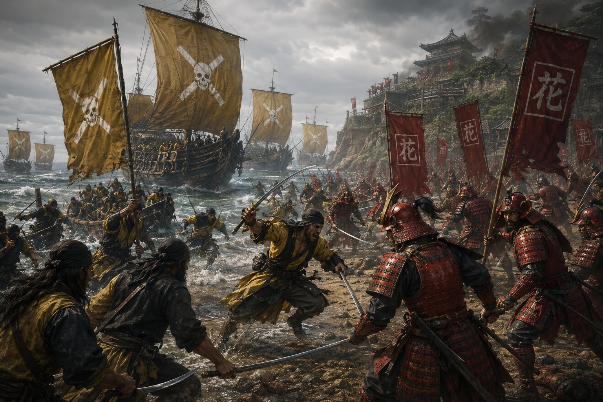
Les pirates pillèrent des ports et capturèrent des navires avant que la flotte dynastique ne les repousse vers leurs îles fortifiées.
Une expédition protégea les villages contre une créature haute de dix mètres. Hideo Takemura la terrassa au terme d’un combat légendaire, suscitant autant de soulagement que de tristesse.
Le gisement finança constructions, défenses et commerce. Mineurs, artisans et marchands affluèrent vers une région jusque-là isolée.
Duels, tir à l’arc et épreuves d’endurance réunirent les deux cultures guerrières. Takeda Masamori et Armand de Ferclair terminèrent leur affrontement à égalité et se saluèrent sous les acclamations.
Une expédition découvrit des êtres de bois, de lianes et de fleurs lumineuses. Des rites permirent le dialogue et le Tenno plaça leur forêt sous protection impériale.
Fièvres et marques violettes gagnèrent le Sud. Les Gardiens préparèrent un remède de fleurs et de racines sacrées qui stoppa l’épidémie et sauva d’innombrables vies.
Des flottes pirates occupèrent l’archipel stratégique, croyant Shintai trop faible pour répondre. Une campagne navale de plusieurs mois reprit la majorité des positions et força leur retrait.
Routes maritimes et ports rouvrirent. Vin, huile et marbre furent échangés contre soieries, céramiques et armes, inaugurant une période de stabilité.
Un intrus atteignit la chambre de Hirotaka. Le Tenno para le coup et lutta jusqu’à l’arrivée des gardes, mais l’assassin s’échappa ; aucune enquête n’identifia son commanditaire.
Guerre dynastique, signes impossibles et créatures des failles conduisent Yamashiro vers son ultime bataille.
Des bandes unies incendièrent entrepôts et navires après la famine. La flotte dispersa la Ligue et sécurisa les routes maritimes.
Les deux fils d’Akihito Ryusei divisèrent le royaume. Kenshiro appela Falkheim à son secours, mais pillages et violences retournèrent les clans contre lui.
Daichi transforma la guerre civile en lutte pour l’indépendance. À la Plaine des Mille Bannières, il écrasa son frère et renvoya les contingents nordiques avant d’être couronné.
Des monstres végétaux aux yeux lumineux ravagèrent fermes et routes. Les clans les repoussèrent jusqu’à leur crevasse et en scellèrent l’accès.
Saisons impossibles, comètes, rivières changeantes et silhouettes dans les bois annoncèrent la chute. Les rivalités des gouverneurs s’aggravèrent tandis que les temples relisaient d’anciennes prophéties.
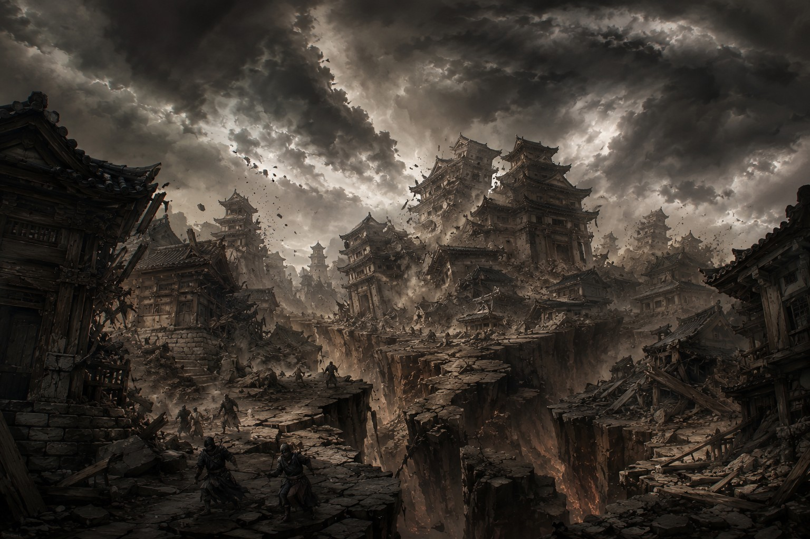
Montagnes, villages et ports furent détruits en quelques heures. Des failles s’ouvrirent jusque dans Yamashiro et libérèrent des créatures de racines et de lianes parcourues d’énergie violette.
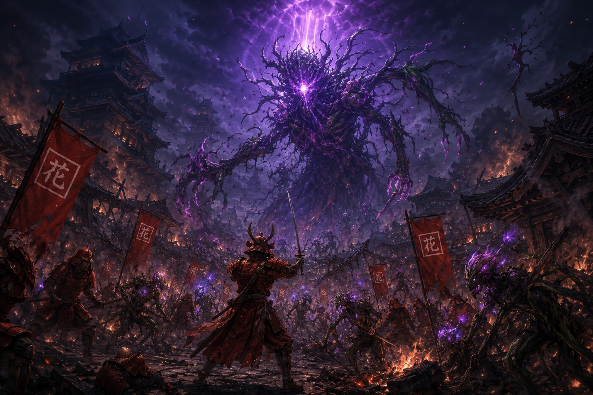
Soldats, artisans, marchands et paysans défendirent chaque avenue. Alors que les lignes tenaient encore, une faille gigantesque libéra une montagne vivante de troncs, de racines et de lumière mauve.
Le dernier Tenno quitta les ruines du palais et gravit le titan végétal au milieu des derniers défenseurs. Il plongea sa lame dans la masse violette qui lui servait de cœur.
Le rugissement fut entendu dans tout Akashima. Puis terres, mers et ciel furent engloutis dans une lumière aveuglante ; nul ne sut ce qu’il advint d’Hirotaka.
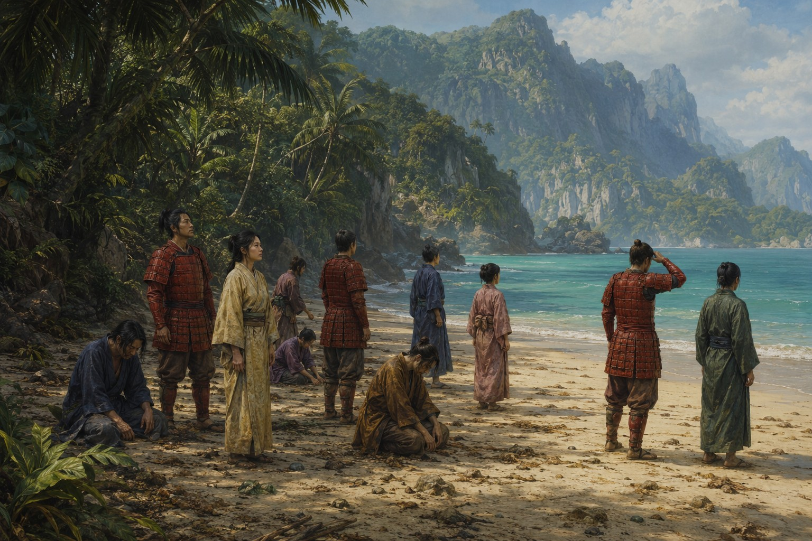
Les survivants se réveillèrent sur une plage étrangère, sous un autre ciel. Certains pleurèrent Akashima ; d’autres comprirent que leur discipline, leurs traditions et leur harmonie pouvaient encore guider une civilisation à naître.
Le début d’un nouvel âge
Sur un rivage sans sanctuaire ni carte, les survivants portaient encore le respect, l’harmonie et la bravoure. Leur ancien monde avait cessé d’exister ; leur devoir était désormais de donner un sens au suivant.